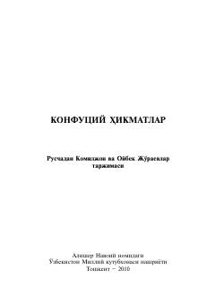

KHBuyuk xitoy faylasufu Konfutsiyning hikmatlari va falsafiy qarashlari to'plami.
Ushbu kitob buyuk xitoy faylasufu Konfutsiyning hayoti, ijtimoiy-siyosiy qarashlari va hikmatli so'zlariga bag'ishlangan. Unda insoniylik, odob-axloq, ota-onaga hurmat va an'analarga rioya qilish kabi falsafiy tushunchalar yoritilgan.